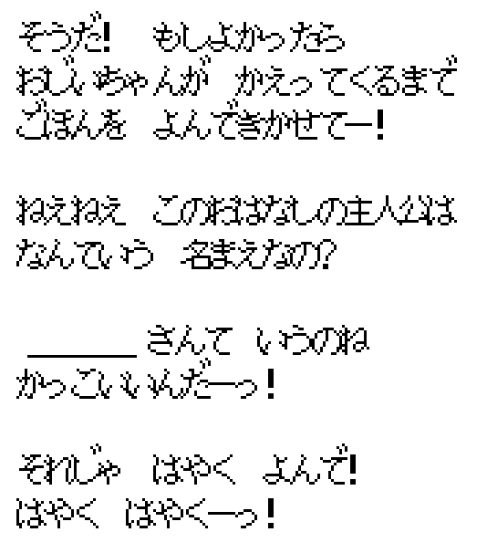
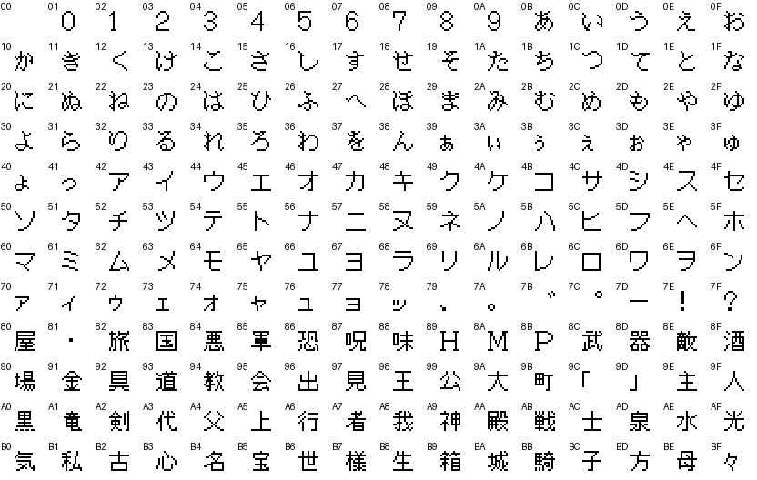
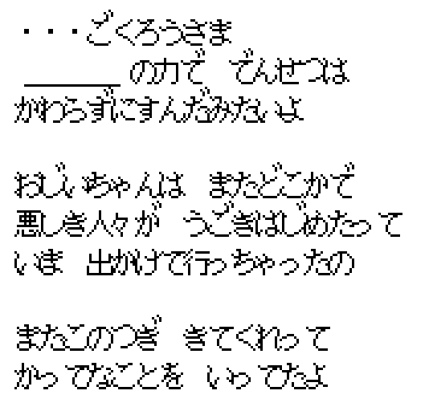
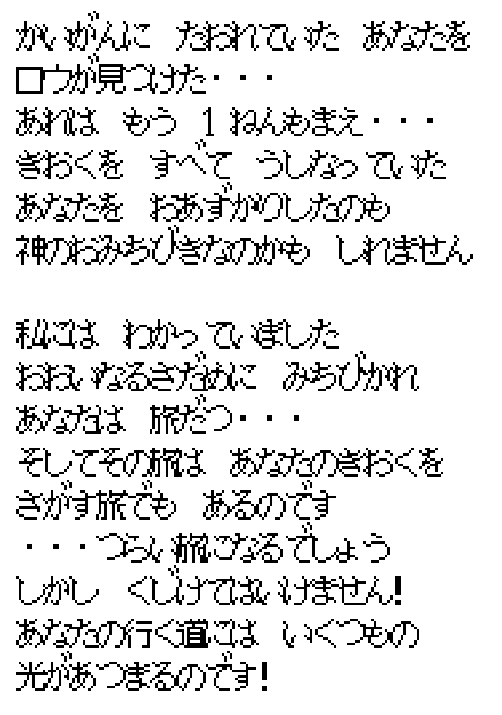
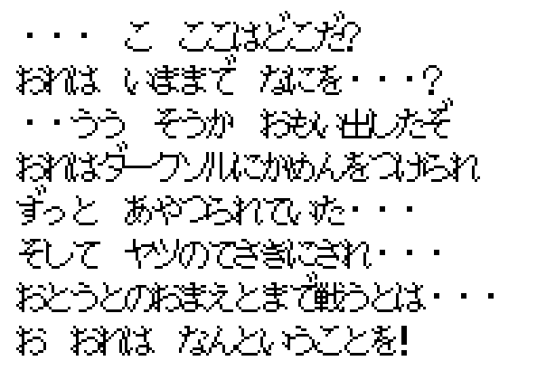
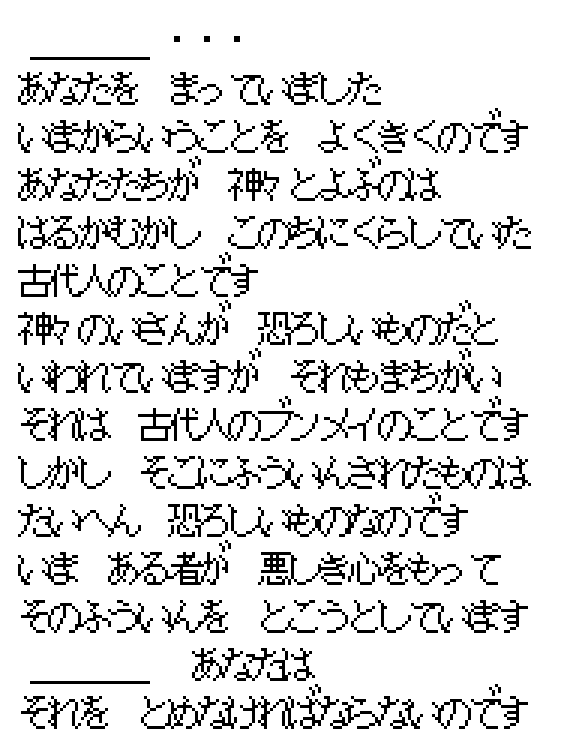
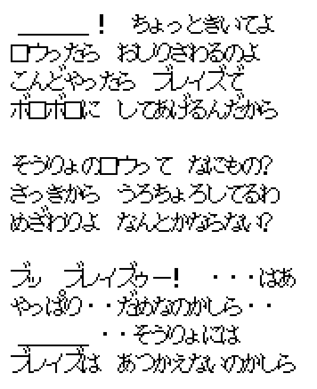
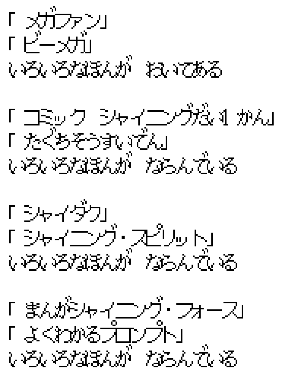
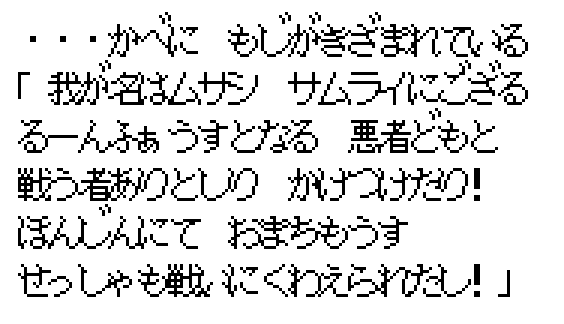

Home › Shining Force › The Japanese script
Shining Force — The Japanese Script
Both ROMs decoded, every line laid side by side

The short version
The English Shining Force is not a shortened Japanese Shining Force. It is a different telling of the same plot. The Japanese game is a picture book read to a little girl; the English game makes her a character inside the world. In Japanese, Max washed up on a beach a year before the game with no memory, and the masked knight Kane is his older brother. In English he is a promising young fighter and Kane is just a villain with a mask. The Japanese bookshelves are full of Sega in-jokes; the English ones got titles like How Dank Was My Dungeon.
I know because I decoded both ROMs, all 2,232 English strings and 2,229 Japanese ones, and read them against each other. The text below quotes the lines by their index in the ROM so anyone can check.
Two ROMs, one compression scheme
Shining Force does not store its dialogue as plain text. Each string is Huffman
coded, and the tree used to decode a symbol depends on the symbol before it, so a hex
editor shows nothing. The US decoder sits at $01F00C; its table of tree
offsets is at $01E892, the trees at $01EA3A, and nine banks of
text start at $131A1C, with a pointer table at $13E906 that is
itself pointed to from $130000. A string begins with a length byte that
counts itself, symbols below $C0 are characters, $C0 ends the
string, and anything above is a control code looked up in a small word table.
The Japanese ROM, Shining Force: Kamigami no Isan, uses the very same
decoder, byte for byte, relocated to $131A4E. Its trees are at
$13000C and $1301B4, its banks start at $131AAA.
The alphabet is where the two part ways. The US font has 128 slots of 32 bytes each, 80 of them
drawn, proportional, 12 pixels wide at most. The Japanese font at $02C008 has
192 glyphs of 24 bytes each, a fixed 16 by 12 cell advanced 10 pixels at a time:
digits, both kana syllabaries, small kana, and 64 kanji chosen to cover the words the
script needs most. Voicing marks are separate glyphs, drawn four pixels above the
kana that follows them without advancing the cursor.

Once you know that, the rest is bookkeeping. My US dump matches the transcript in the SF1DISASM project on all 2,231 lines, which is how I know the decoder is right. The Japanese dump I checked by rendering lines with the ROM's own glyphs and reading them. The two scripts line up by index for the first eight banks of 256 strings; only the ninth is shuffled, and there by a few positions.
The girl and the book
The first person you meet in the English game is Simone, a child who has found a book about Dark Dragon and decides it is coming back. She asks what she should call you, hopes you will help, and every time you load a game she tells you to get going because evil spreads across Rune with every passing day. After the credits she says the ending you saw is the official one, "but you and I know differently, don't we?"
The Japanese girl has no name, and no book about dragons. Her grandfather is out. She has a picture book, and she wants it read to her until he comes home.
そうだ! もしよかったら おじいちゃんが かえってくるまで ごほんを よんできかせてー!
I know! If you don't mind, read me the book until grandpa gets back!
ねえねえ このおはなしの主人公は なんていう 名まえなの?
Hey, hey, what's the hero of this story called?
それじゃ はやく よんで! はやく はやくーっ!
Then read, quick! Quick, quick!
I think Dark Dragon's coming back! Will you help us? C'mon, it'll be an adventure!
Say, what shall I call you?
You need to get going! Evil spreads farther across Rune with every passing day.
Every menu line follows from that. "Which adventure would you like to continue?" is どの つづきを よんでくれるの?, which continuation will you read me. Deleting a save is どれを なくしちゃうの?, which one are you losing. Quitting for the day is おじいちゃん もどってこないね, grandpa hasn't come back yet. You are not the hero. You are the adult reading a story, and the hero's name is whatever you decide the hero in the book is called.
The epilogue keeps the frame. The English girl tells you the official ending is a lie and evil stirs somewhere else. The Japanese girl says something stranger.

"Good work. Thanks to [Hero], the legend didn't change." Then: "Grandpa went out again, saying bad people are stirring somewhere. He said to come back next time. How selfish of him." The grandfather who is always out when evil stirs is never explained. Read it once as a child and it is a joke. Read it again and the old man starts to look like Nova, or like the narrator of every Shining game since.
The traveler after the credits
When the credits finish, the game shows one more scene before the girl closes the book: a farmer, a young man, and a figure in full armor beside him, on a country road. The ROM keeps three tile sets for it, labelled in the disassembly as Max, Adam and the farmer. In English the farmer remarks on the armor, the traveler says he has come "a long way, longer than you can imagine", accepts work in the fields, and gives his name. It reads as Max, home from the sea, and the armored figure is just company.
The Japanese scene gives the armored figure a line of his own.
・・・ほほう めずらしいわい ぜんしんよろいをきているとはのう
Farmer: Well now, that's unusual. Wearing a full suit of armor...
いいえ これは 私のからだです
Adam: No. This is my body.
アダム いいかもしれないな しばらく おせわになるか
Max: Adam, this might be all right. Let's stay a while.
わたしですか? わたしの名まえは ... [Hero]!
Max: Me? My name is... [Hero]!
We don't see many folk in full armor like that. Quite a fancy getup!
I have come a long way. Longer than you can imagine.
That sounds like just what I need right now. I work hard and I'm a fast learner.
Me? You can call me... [Hero]!
So the Japanese ending says out loud what the pictures only suggest: the hero got out of the sinking castle, the robot got out with him, and the two of them settle in a village where nobody knows what a machine soldier is. The English writers kept the pictures, cut Adam's line, and gave the "come a long way" speech to whichever of the two you take it to be. Since Adam is a thousand years old, it works either way.
Max washed up on a beach
In the English Guardiana, Max is a boy Varios has been training with a sword. The knights grumble that their captain wastes time on him. That is the whole backstory.
The Japanese Guardiana has a different young man walking through it. An old man by the church tells him, unprompted, not to fret about losing his memory, since everyone forgets things with age. The knights call him うまれもわからぬ者, a man of unknown birth, and どこのウマのホネともわからんヤツ, a nobody from nowhere. And the priest of the Guardiana chapel, telling Max about a dream, says this:

"Lowe found you collapsed on the shore. That was already a year ago. You had lost all your memory. Maybe it was the gods' guidance that we took you in." The same priest, when Max leaves Guardiana: "I knew it. You are led by a great fate. And this journey is also a journey to find your memory. It will be a hard road."
A handful of lines carry the amnesia in Japanese, and every one of them was rewritten. The English priest tells you about a dream of Guardiana in ruins instead, which at least foreshadows the attack. The priest gets a blessing. The knights' contempt for an outsider becomes ordinary jealousy of the captain's favourite.
Kane's brother
This is the change most people who compare the two versions already suspect, and the ROM settles it. In Dragonia, when Kane's mask shatters, the English line is "Darksol masked my face to control me. What have I done? He even made me fight you!" The Japanese line has one more word in it.

おとうとのおまえとまで戦うとは: "to think I fought even you, my younger brother." Nova hears it and, in the next line, asks what Kane meant by calling Max his brother. In the English ROM that line of Nova's is about Darksol being behind everything. Later, when Darksol turns on the two of them in the shrine, Kane pushes Max out of the way with さらば・・・我がおとうとよ!, farewell, my brother. English: "Go, Max, run! I'll deal with Darksol!"
Adam ties it together in Prompt, in a speech the English version cut to a third of its length.

"You and Lord Kane are heirs of the ancient bloodline, destined from birth to fight the Black Dragon. Darksol learned of you both and planned to use you to get the key and the Manual. Lord Kane fought so that you could escape. He lost, and you were badly hurt; that is why you lost your memory." So the amnesia, the brother, the beach and the mask are one story, told in pieces across the whole game. The English script kept the mask.
One more line belongs here. In the Tower of the Ancients, when Kane arrives to save Max from Darksol and dies doing it, the Japanese Kane says the Demon Breath is what beat the two of them the first time, "and you don't remember." The English Kane says "This is the end, Darksol! Max, get out now!"
What the Ancients left
The Japanese title means Legacy of the Gods, and the script spends some effort on what the phrase means. The English game decides early: the legacy of the Ancients "is an evil being that has been sealed away for 1,000 years," as the spirit in the Pool tells Max in Manarina. The Japanese spirit says the opposite.

"What you call gods were the ancient people who lived in this land. The legacy is said to be something terrible; that too is wrong. It is their civilization. What was sealed inside it, though, is terrible indeed." In Metapha the Japanese spirit closes the thought: the true legacy of the gods is "you, and the companions who believed in you and fought at your side." The English Metapha spirit says "The hopes of all of Rune go with you!" and sends Max on his way.
Two smaller pieces of the same puzzle. The Japanese Ramladu introduces himself with a full name, アーク・レイ・ラムラドゥ, Arc Ray Ramladu, emperor of Runefaust; the English one is King Ramladu everywhere except on a bookshelf. And the name Protectora, the peaceful country Runefaust used to be, exists only in English. In Japanese, Guardiana and Runefaust are ふたごの国, twin countries built to guard the west and east gates of the ancient castle, and nobody gives the eastern one a former name.
Names
Some of the renamings are the usual accidents of katakana, some are choices, and a couple change who a character is.
| English | Japanese | Read as | Note |
|---|---|---|---|
| Luke | ラグ | Lug | A different name, not a transliteration. |
| Zylo | ザッパ | Zappa | The werewolf. Everyone in Bustoke calls him Lord Zappa. |
| Vankar | バンガード | Vanguard | A drunk knight named after a formation. |
| Bleu | バリュウ | Baryu | The baby dragon. |
| Rindo | リンドリンド | Rindo-rindo | Shortened, probably for the text box. |
| Rudo | ルドル | Rudol | |
| Ring Reef | フライパンリーフ | Frying Pan Reef | Because it is shaped like one. The English kept the ring and lost the pan. |
| Egress | リターン | Return | |
| Demon Blaze | デーモンブレス | Demon Breath | |
| Lunar Dew | つきのしずく | Moon Drop | |
| Orb of Light | かがやきのたま | Shining Orb | |
| Pool of the Ancients | きおくの泉 | Pool of Memory | Which fits a hero who has lost his. |
| Manual of the Seal | ひでんのしょ | Book of Secrets | |
| Accursed Door | 古えのもん | Ancient Gate | Nothing accursed about it in Japanese. |
| Shimol, Shell's aunt | シエルのいもうと | Shell's younger sister | A relative changed generation in translation. |
| Queen Koron | パオの王コロン | Koron, ruler of Pao | Also "a prophet" who reads the Paopab, the beasts that pull the town. |
| Jogurt | ヨーグルト | Yogurt | Spelled the obvious way. |
Mishaela is the one to watch. In Alterone the English fortune teller greets Max with "With my powers I can see the future" and never says who she is. The Japanese one opens with 私は うらないしのミシャエラ, I am Mishaela the fortune teller, so the player has her name a full chapter before the circus. At the circus the Japanese ringmaster is ミシャエラドール, the Mishaela Doll, "my double," and she says the mayor's grandson's soul was to be offered to Darksol. The English boy says she was going to feed him to a dragon. When she dies in Demon Castle, the Japanese Mishaela warns Max about Darksol, says everything that happened to Runefaust was that man's scheme, and promises to wait for him in the world of darkness "until the Black Dragon wakes." The English Mishaela dies telling him he will never stop Darksol.
Headquarters gossip
Between battles you can talk to everyone at headquarters, and this is where the Japanese writers had the most fun and the English ones the least. Most English lines here are variations on "I'm ready when you are." The Japanese ones are people.

Tao: "Max, listen. Lowe touched my bottom. Next time he does it I'll Blaze him to bits." Anri: "Who is that priest Lowe? He's been hanging around. An eyesore." Lowe, a few lines later, is trying to cast Blaze and failing. Ken, on the day he joins, confides that he respects Max "but don't tell Mae." Gort is drunk and wants the glass refilled. Domingo, who speaks in baby talk, informs you that the sea is three times the size of the land and that the world is not flat, "though this lot won't believe it." On the ship, Guntz hates the sea because his engine and armor will rust; in English he says "I hate the sea!" and nothing else.
The bookshelves
Every bookshelf in the game has a line, and the two scripts diverge on nearly all of them. The English titles are jokes written for an American audience: How Green Was My Dragon, Do Witches Really Float?, 101 Ways to Cook Dragon. The Japanese titles are jokes written for people who bought the game in Japan in 1992.

The shelf in Alterone Castle holds メガファン and ビーメガ, the magazines Mega Fan and Beep! Mega Drive; the English shelf holds 101 Dungeon Crafts. A shelf in Rindo has Comic Shining, Volume 1 next to たぐちそうすいでん, The Legend of Commander Taguchi, which reads like a nod to someone on the team; the English shelf has Secrets of the Universe. Bustoke has シャイダク, the fan abbreviation for Shining in the Darkness, and Shining Spirit; in English those books are "written in strange languages." Prompt's school has a Shining Force manga. Rindo's bar has Shining Chronicle. The English versions are funnier to read cold. The Japanese ones are a time capsule.
Two signs deserve a mention. A signboard on the mountain road that reads "Travel Light!" in English says ヨーグルトをわらう者は ヨーグルトになく in Japanese: he who laughs at Yogurt will weep over Yogurt. And the weekly tally at the animal experiment in Manarina, "6 hens, 2 rabbits, 3 cats" in English, ends in Japanese with ヨーグルト0. Yogurt, zero.
Odds and ends
The people of Prompt speak a hick dialect, every sentence ending in ズラ, and the schoolteacher speaks like a snob, every sentence ending in ザマス. When the Shining Path is repaired and the town turns clever overnight, the guard greets you with "Welcome to Prompt, zura! Oh, no more zura, right?" The English version renders the change with jokes about school being boring and then not boring, which is the best you can do without a dialect to drop.
Musashi's message, carved into a wall in Prompt, is written in Japanese with Runefaust in hiragana, るーんふぁうすと, the way a samurai who has never seen the word in katakana would write it.

The ending changes its mind about Max. In both versions the castle sinks with him inside. The English Nova offers a theory: "Perhaps a great hero is needed to guard the seal. Perhaps he must stand as an eternal vigil to prevent Dark Dragon's return." The Japanese Nova only guesses that the Chaos Breaker's power held Max inside, and the last word in Japanese goes to the party: "Mae, it's all right. Max is surely alive." Then the girl closes the book.
Battle messages are drier in Japanese and occasionally more literal. A dead character 力つきた, ran out of strength. Desoul reads "had his soul drawn out." The Laser Eye's countdown is a plain countdown, without the English "targeting activated." Egress in the ending is a single word, リターン!!, which is Max's last line in the game.
What the English writers were doing
It would be easy to file all this under things lost in translation, and unfair. The US script is not a bad translation; it is a rewrite with a plan. It removes the amnesia and the brother, which means it removes the reason the plot needs Max in particular, and replaces it with a hero chosen by the Orb of Light. It turns the girl with the picture book into a girl inside the story, so that the player is the hero rather than the reader. It gives Runefaust a former name and a fall from grace. It writes new jokes rather than translating old ones, and most of the new jokes land. What it does not do is tell the Japanese story, and if you only know the English one, the ending of the Game Boy Advance remake, where Max and Kane are brothers on screen, looks like an addition. It is a restoration.
How this was done
The subjects are Shining Force (USA), 1 572 864 bytes, MD5
4b4acbe75ff7aaeb534ab78ed95910d1, and Shining Force: Kamigami no
Isan (Japan), same size, MD5 3ba871d87f35feefcadfa9d4a2c06d13.
Every address above is an offset into one of those files.
The decoder follows the routine at $01F00C instruction by instruction:
one tree per preceding symbol, leaf values stored backwards from the tree offset, a
1 bit for a leaf and a 0 bit for a node. Control codes above $C0 were
named by aligning my US output with the SF1DISASM transcript and voting:
$C2 is a line break, $C8 the hero's name, $CD
a wait for a button, and so on. The Japanese decoder was found by searching the ROM for
the same machine code with the two lea displacements left as wildcards; the
font was found by disassembling the glyph routine at $001CD8, which
multiplies the symbol by 24 and adds the pointer stored at $02C000. I
transcribed the 192 glyphs by hand from a rendered sheet, then had a script rebuild the
whole Japanese text as Unicode.
Alignment was free for the first 2,048 strings, since both ROMs keep 256 strings per bank and the writers replaced lines in place rather than inserting them. The last bank, 184 strings in English and 181 in Japanese, was aligned on the placeholders each string contains. Sixty-six English and sixty-three Japanese strings in that bank have no counterpart at the same position; most are guards in Prompt Castle saying the same thing in a different order.
Translations in this article are mine and prefer accuracy to grace. If you read a line differently, tell me; the indexes are there so you can find it.
Questions people actually ask
Are Max and Kane brothers in Shining Force?
In the Japanese ROM, yes, and the game says so three times: when the mask breaks, when Kane pushes Max away from Darksol, and in Adam's explanation. All three lines were rewritten in English to leave the relationship out.
Does Max have amnesia in the Japanese version?
Yes. Lowe found him on the shore a year before the game with no memory, the chapel priest tells the story, and several townspeople in Guardiana refer to it. Adam later explains that the wound came from Darksol, in the fight where Kane let Max escape.
Who is the girl who saves your game?
In English, Simone, who found a book about Dark Dragon. In Japanese, an unnamed girl waiting for her grandfather, who asks you to read her the story. Her menu lines all describe reading a book, and the epilogue is her telling you the legend stayed unchanged.
What do the bookshelves say in Japanese?
Among other things: Mega Fan, Beep! Mega Drive, Comic Shining Volume 1, Shining in the Darkness, a Shining Force manga, and The Legend of Commander Taguchi. The English shelves replaced every one of these.
Credits
The text format and the US transcript come from SF1DISASM, the Shining Force Central disassembly. The Japanese side is read straight out of the cartridge.